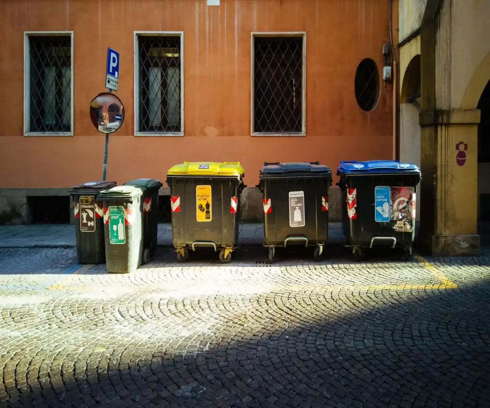
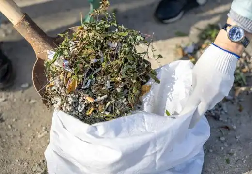
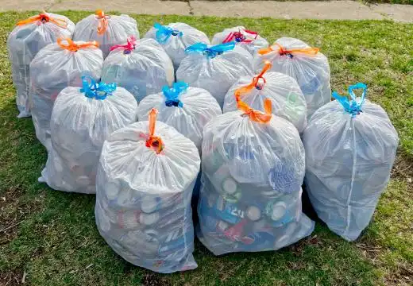
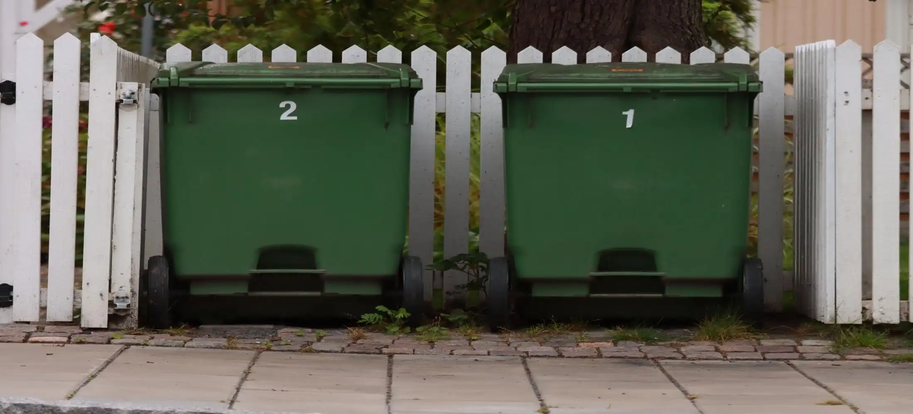
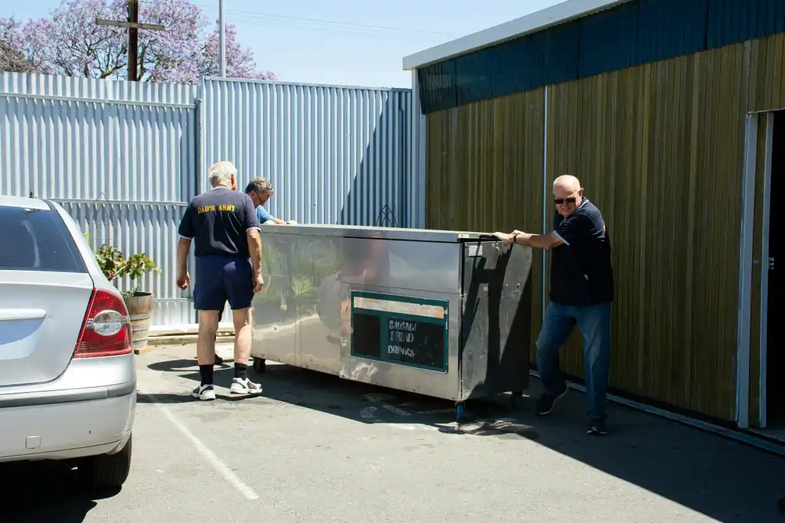

Fast Delivery
Same-day and next-day skip bin hire available across Launceston
We provide skip bin hire in Launceston for homeowners, landlords, businesses, and contractors who need a simple way to manage waste during cleanup and renovation projects. Skip bins are commonly used for household rubbish, green waste, moving house cleanouts, renovation debris, and construction materials. Whether you need a mini skip bin for a small residential job or a larger bin for ongoing building work, we offer flexible skip bin sizes, reliable delivery, and convenient pickup across the Launceston area.
Servicing Launceston and nearby Northern Tasmania communities

Same-day and next-day skip bin hire available across Launceston
Flexible skip bin sizes for household, green waste and renovation jobs
Clear skip bin hire pricing with no hidden fees or surprises
Servicing Launceston and surrounding Northern Tasmania suburbs
Skip bin hire in Launceston is used for a wide range of projects including home cleanups, garden waste removal, property renovations, and construction site disposal. We supply bins in multiple sizes so customers can manage waste efficiently without multiple trips to the tip, with flexible delivery and pickup across Launceston and surrounding areas.

Suitable for building materials such as timber, bricks, concrete, tiles, and general demolition waste from renovation and construction projects.

Used for landscaping work, tree branches, leaves, soil, and general garden cleanups across residential properties in Launceston.

Ideal for moving house, garage clear-outs, furniture disposal, and general unwanted household items during residential cleanups.

Designed for offices, retail stores, warehouses, and commercial renovation projects needing bulk waste removal solutions.
Skip bin hire demand in Launceston is driven by ongoing residential upgrades, rental property changes, landscaping work, and small-scale construction activity. Waste collection needs vary depending on property type and access conditions across the region.

Skip bin hire demand across Launceston varies from suburb to suburb, depending on housing age, renovation activity, and ongoing residential maintenance work. Older suburbs often generate more mixed household waste and renovation debris, while newer or expanding residential areas typically require more frequent garden cleanups and general waste removal services.
We provide skip bin hire Launceston area coverage across both tight-access residential streets and larger properties that require coordinated bulk waste removal. This includes driveways with limited space, shared access areas, and construction sites where efficient placement and pickup scheduling is important for smooth waste management.
For customers searching for launceston skip bin hire - affordable skips, we offer practical options that suit different suburb conditions, whether it is a small household cleanup, a garden renovation, or a full property clearance. Our service is designed to match bin sizes with local demand patterns across Launceston TAS, helping reduce unnecessary costs and improve overall waste handling efficiency.
We operate across Launceston and surrounding Northern Tasmania suburbs.
Local skip bin hire availability depends on location, access, and project type across Launceston and nearby.

When booking skip bin hire in Launceston, choosing the right skip bin size, waste type, and delivery timing can significantly reduce overall cleanup costs and improve project efficiency. We provide local skip bin hire solutions across Launceston TAS for homeowners, builders, landscapers, and businesses needing fast and reliable waste removal services.
Our skip bins in Launceston are suitable for a wide range of projects including home renovations, garden cleanups, construction waste removal, and commercial site clearing. Whether you are managing a small residential cleanup or a large-scale building project, we help you choose the right skip bin size to avoid overfilling, extra charges, or unnecessary delays.
Skip bin sizes from 3m³ mini bins up to larger bins for waste removal across Launceston.
Suitable for household waste, green waste, furniture disposal, renovation debris, and general construction waste in Launceston areas.
Competitive skip bin hire Launceston pricing designed for both small cleanups and ongoing commercial waste projects.
Quick skip bin delivery and pickup available across Launceston and surrounding Northern Tasmania suburbs.
We provide skip bin hire in Launceston for homeowners, small businesses, and construction projects that need simple and reliable waste removal solutions. Whether it is a home cleanout, renovation, or ongoing site work, our service is designed to make waste disposal easier across Launceston and nearby areas.
Many customers looking for Launceston skip bin hire choose us because we offer flexible options for different job sizes, from mini skip bin hire in Launceston for small cleanups to larger bins for renovation and building waste. We also support common needs such as garden waste, furniture disposal, and mixed household rubbish.
If you are comparing options like Launceston skip bin hire affordable skips or looking for a practical local provider such as skip bin hire Launceston - bins r done style services, we focus on clear pricing, easy booking, and fast delivery across Launceston TAS and surrounding suburbs.
Book Skip Bin Now
Feedback from homeowners, trades, and small businesses using our skip bin hire services across Launceston TAS
“We booked skip bin for a garage cleanout and it was really simple. The mini skip bin was the perfect size and pickup was arranged without any issues. Pricing was clear from the start.”— Mark & Olivia, Launceston
“I was looking for affordable skips for a backyard renovation. They delivered the bin the next day and it handled all our green waste and old timber easily.”— Daniel, Newstead
“Used their service for a small construction job. The bin size was spot on and it saved us multiple trips to the tip. Very efficient service overall.”— Mike, Riverside
Skip bin hire pricing in Launceston is primarily influenced by waste weight, bin size, and disposal processing fees. Heavier materials such as construction rubble and mixed renovation waste increase landfill charges, while lighter loads like green waste and household items are generally cheaper to process. Transport distance and hire duration can also affect total cost.
Most our customers choose 3-4m³ mini skip bins hire Launceston for small cleanups and 6-12m³ bins for renovation or construction waste. The right size depends on how much rubbish you have and the type of materials being disposed of. We will help you to pick the right.
Yes, launceston skip bin hire - affordable skips are available for most residential and commercial cleanups. Smaller bins are often the most cost-effective option for household waste, green waste, and light renovation jobs.
Most skip bin hire services in Launceston accept general household waste, green waste, furniture, and renovation debris. However, hazardous materials such as chemicals, asbestos, and certain electronic waste are restricted due to environmental and safety regulations. Proper sorting helps ensure efficient waste processing and compliance with disposal rules.
Skip bin hire Launceston area services often offer same-day or next-day delivery depending on availability. This is common for residential cleanups, renovation projects, and urgent waste removal jobs across Launceston TAS.
Receive a fast response with upfront pricing and no hidden fees.